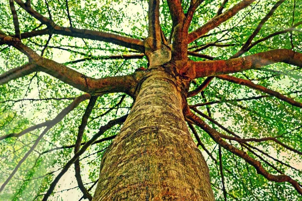
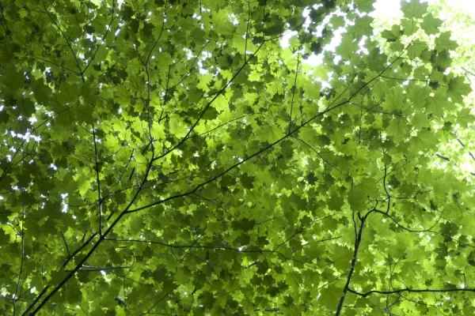

El árbol es una planta de tallo leñoso que se ramifica a cierta altura del suelo. El término hace referencia habitualmente a aquellas plantas cuya altura supera un determinado límite en la madurez, diferente según las fuentes: dos metros, tres metros, cinco metros o los seis metros.
Aquí habrá un espacio para el indice (Este es un "Borrador")
Los árboles se originaron hace muchos millones de años, cuando nuestro planeta era muy caliente y había mucho oxígeno en la atmósfera, lo cual ocasionó un aumento desmedido en la cantidad de vegetación y en la competencia por el espacio y la luz solar, en una época en que las plantas eran simples hierbas y arbustos pequeños.
Las raíces son la parte del árbol que crece de forma subterránea y, a veces, superficial. Las funciones de las raíces de los árboles son variadas, pero las principales son dos:
Captación de agua y minerales.
Brindar al árbol soporte y anclaje.
Te recomendamos ampliar esta información con este otro artículo en el que hablamos más a fondo sobre las Partes de la raíz y sus funciones(link) y con este otro post sobre los Tipos de raíces.(link)

El tronco es, probablemente, la parte más característica del árbol y lo que hace que podamos identificarlo fácilmente como tal. El tronco del árbol tiene dos funciones principales:
Sostener la parte aérea del árbol.
Transportar agua y nutrientes entre sus distintas partes.
Y es mucho más que una simple columna leñosa y, además, cuenta con distintas partes.
Las partes del tronco y sus funciones son:
La corteza y el floema son las capas exteriores del tronco y las ramas. Es una cubierta protectora que se encarga de proteger la madera nueva, y a la vez de transportar la savia enriquecida, de forma tanto ascendente como descendente.
cámbium es una fina película entre la albura y la corteza, que se encarga de producir las nuevas capas de tronco que se producen en cada época de crecimiento. Es una parte esencial del árbol, pues sin ella no puede seguir desarrollándose y muere. En las plantas dicotiledóneas, el crecimiento de cada año deja una marca en la albura, los llamados anillos de crecimiento.
Albura y el xilema es la parte de la madera joven y viva. Está llena de vasos conductores que funcionan de forma exclusivamente ascendente, llevando la savia bruta hasta las hojas. En este enlace encontrarás más información sobre Qué es el xilema y su función.
duramen está formado por células duras de madera muerta, que aportan al árbol resistencia a las plagas y un soporte firme. s más oscura que el xilema.
médula , por último, consta de células muertas o debilitadas y se encuentra en el centro exacto del árbol. Es muy oscura y puede ser de diferentes texturas según el árbol en concreto y la edad de este.
Las hojas son la parte donde el árbol fabrica alimento a partir de los minerales y agua que las raíces traen hasta estas, pues recordemos que los árboles son organismos autótrofos o que fabrican su propio alimento o materia orgánica a partir de materia inorgánica. Este proceso es posible gracias a la clorofila presente en las hojas, que les da su color verde característico y posibilita la realización de la fotosíntesis. Aprende más sobre Qué es la clorofila y acerca de la Diferencia entre la fotosíntesis y la respiración de las plantas con estos otros posts de EcologíaVerde.
Por último, están las flores, frutos, semillas y conos de los árboles. Estos cumplen con una función reproductiva de diferentes formas, pero su objetivo es el mismo: llevar las semillas tan lejos como sea posible del árbol progenitor, para así favorecer una mayor colonización.
[Imagenes ilustrativas]

Aqui se pondra un link que lo lleve a una pagina de mi web, en donde se vea un pequeño mapa interactivo los distintos lugares en donde crecen los raboles
MINIMAPApatata